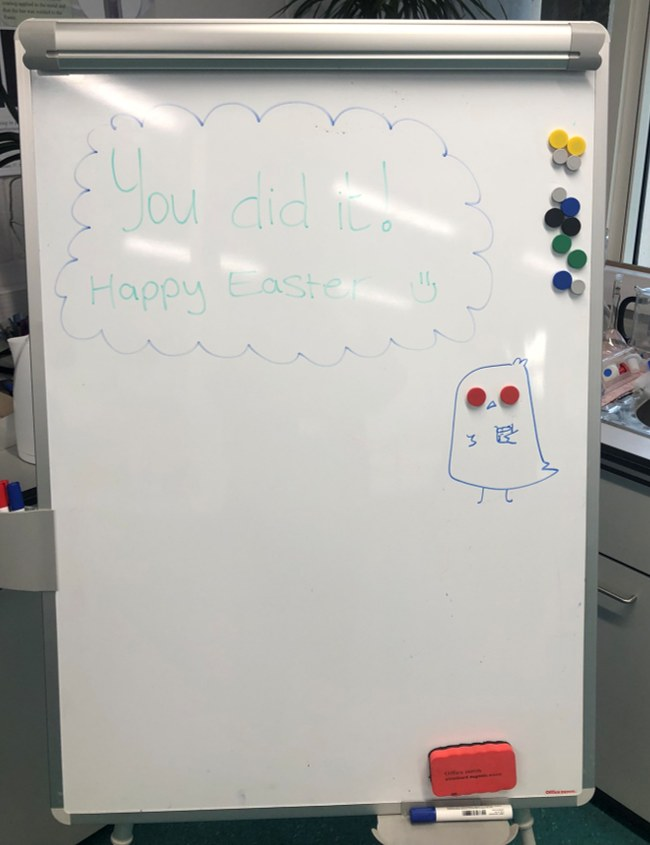

Teaching, supervision and mentoring
Fellow of the Higher Education Academy (FHEA), teaching across the Departments of Materials and Engineering Science.
| Period | Role | Where |
|---|---|---|
| 2021 to present | Laboratory Demonstrator (senior from 2025), MATLAB laboratories (P5, B14); teaching and assessment of the MATLAB component of a postgraduate Information Engineering course | Engineering Science, Oxford |
| 2022 to present | Senior Laboratory Demonstrator, 1P8 electrochemistry laboratory (undergraduate), including marking of lab reports and workbooks | Materials, Oxford |
| 2024 to present | Co-supervisor of an MEng project each year on circular additively manufactured polymer filaments, with Prof. Hazel Assender and Mike Curtis-Rouse (Satellite Applications Catapult) | Materials, Oxford |
| 2021 to present | Supervisor, OMCS 3D-printing laboratory | Materials Characterisation Service |
| 2020 to present | OxRAM project-based teaching: Arduino robotics, circuit integration, prototyping, open-access training resources and ROS lectures | OxRAM society |
| 2020 to present | Annual one-to-one mentor on career development, Careers Support Network (six mentees, now in academic or industrial positions) | University of Oxford |
| Ongoing | College Advisor and pastoral care, advising several students each year | Linacre College |
| 2026 | Mentor to one of the first six Oxford Ellison Institute of Technology Scholars | Oxford Women in Engineering network |
| 2024 | Invited lecture, UNIQ summer school | Materials, Oxford |
| 2017 | Co-supervisor of a Master's project (graphene) | University of Tsukuba |
Teaching innovation
Visual Thermodynamics
Visual Thermodynamics: A Deck of Learning Cards for Undergraduate Teaching, published by the Department of Materials, Oxford, 2026. Instruction cards for mathematics and thermodynamics.
Visual Mathematics
Learning cards that I designed to teach mathematics.
student feedback participation after a QR-code feedback system, with a comment library and rubric for consistent marking.
Accessible teaching
Multimodal materials including 3D-printed models and colour-blind-friendly resources, with AI-assisted study cards and digital learning resources.
Industry-linked projects
MEng projects with an embedded industrial co-mentor from the Satellite Applications Catapult.
Also: co-supervision of doctoral students and departmental Mental Health First Aider (2022 to present).
